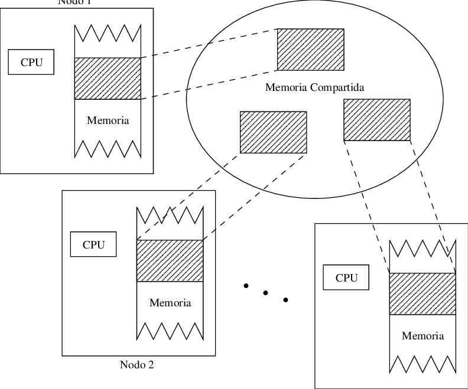

En los sistemas de memoria compartida, varios procesadores utilizan la misma memoria principal como punto de acceso común. Todos pueden leer y escribir en ese espacio, lo que facilita la coordinación entre tareas y simplifica la programación al no requerir intercambio explícito de mensajes.

Estos sistemas permiten comunicación rápida entre procesadores, ya que la información se encuentra disponible en una misma ubicación. Sin embargo, si varios procesadores intentan modificar los mismos datos, pueden surgir conflictos que deben manejarse con mecanismos de sincronización.
Un multiprocesador es una computadora con varios CPUs que comparten la memoria principal. Cada procesador usualmente posee su propia caché, pero accede a la misma RAM. Esto permite distribuir tareas y acelerar cálculos complejos sin necesidad de múltiples equipos físicos.
SMP (Symmetric Multiprocessing): todos los procesadores operan bajo las mismas condiciones y pueden acceder de manera equitativa a la memoria. Ofrece balance, pero su escalabilidad es limitada.
NUMA (Non-Uniform Memory Access): cada procesador tiene memoria local pero puede acceder a otras zonas con mayor latencia. Este modelo mejora el rendimiento en sistemas más grandes.
Entre sus ventajas destacan la comunicación rápida y la facilidad de programación. Sus limitaciones incluyen dificultades para escalar a grandes cantidades de procesadores y la necesidad de mecanismos de control para evitar accesos simultáneos conflictivos.